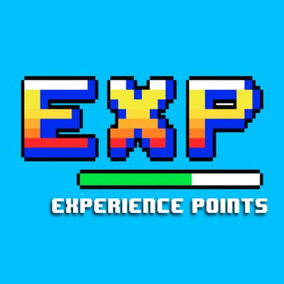

I am proficient in the coding languages of C, Java, and Python.
I also have experience with HTML and Android Studio.
I can use multiple tools from Microsoft Office such as Word, PowerPoint, and Excel, and I have even done 3D modelling in Solid works.
Lastly, I posses great team communication skills, leadership experience, and an excellent work ethic.
Most of my experience comes from academic projects. Such projects included a chess program, a Super Mario Clone,
and a Geometry Solver web application. I have even built two quadcopters and posses two years of robotics experience.
Additionally, many of these projects gave me experience with working in multiple team environments, and I am
currently a robotics mentor for the Glen A. wilson robotics team.

When I am not working I like to play video games, read comics, or travel around the world with my family.
In fact, my interests in games and comics partially helped in inspiring me to pursue a major in Computer Engineering.
Sometimes, I like to also take it upon myself to pursue various personal projects wherein I design some of my own app game clones.
Skills
I am proficient in the coding languages of C, Java, and Python.
I also have experience with HTML and Android Studio.
I can use multiple tools from Microsoft Office such as Word, PowerPoint, and Excel, and I have even done 3D modelling in Solid works.
Lastly, I posses great team communication skills, leadership experience, and an excellent work ethic.
Experience
Most of my experience comes from academic projects. Such projects included a chess program, a Super Mario Clone,
and a Geometry Solver web application. I have even built two quadcopters and posses two years of robotics experience.
Additionally, many of these projects gave me experience with working in multiple team environments, and I am
currently a robotics mentor for the Glen A. wilson robotics team.
Hobbies/Interests
When I am not working I like to play video games, read comics, or travel around the world with my family.
In fact, my interests in games and comics partially helped in inspiring me to pursue a major in Computer Engineering.
Sometimes, I like to also take it upon myself to pursue various personal projects wherein I design some of my own app game clones.